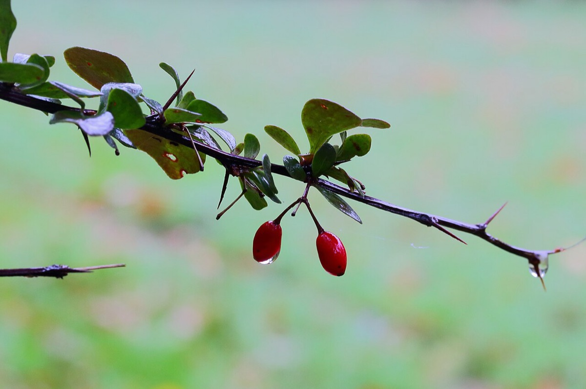

Japanese Barberry
Berberis thunbergii
- Also called
- Barberry
- Kind
- shrub · Berberidaceae
- Legal status
- Tier 3 on the Agency of Agriculture quarantine list (the VTinvasives species page links to the quarantine rule but does not state the status itself) (checked 2026-10-30)
- Look-alikes
- Common barberry (three-pronged spines; toothed oval leaves; droopy flower clusters)
Pictures

Names
Japanese barberry, Berberis thunbergii. Common barberry is a separate quarantined look-alike with its own VTinvasives page.
Range
Forest, forest edge, floodplains, meadows, fields and disturbed areas; it forms dense stands in forests, open woodlands, wetlands and meadows. County distribution is not recorded here.
How to identify (by season; look-alikes and the key difference)
- A small deciduous shrub, 2 to 8 feet tall, with thin, grooved branches and thin, single straight spines.
- Spring: among the first shrubs to leaf out. Leaves paddle-shaped, up to 1 inch, smooth-edged.
- Mid-spring to early summer: pale yellow drooping flower clusters of 2 to 5.
- Summer to winter: bright red berries (July to October) that hang on well into winter.
- Cut a cane or root: the inner bark and roots are yellow.
- Look-alike: common barberry has three-pronged spines, oval leaves with toothed edges and drooping flower clusters. Single thorns versus three-pronged spines is the quick check.
- Wear gloves: the spines can irritate at puncture sites.
Through the year
Dates are typical for Vermont and shift with elevation and year; "approximate" means the source gave a season and the dates are a translation of it.
| When | What | Look for | What to do | Dates |
|---|---|---|---|---|
| Apr 1 to May 15 | leaf-out (identify) | Leafs out very early compared with most native plants; small paddle-shaped leaves, smooth-edged, up to 1 inch. | - | approximate |
| Apr 15 to Jun 30 | survey (control) | The window before the berries form, when removal works best. | Treat before fruiting; digging stirs up the seed bank and root pieces resprout, so plan follow-up for several years. | approximate |
| May 1 to Jun 30 | flower (identify) | Pale yellow, drooping clusters of 2 to 5 flowers, mid-spring to early summer. | Do not spray while it is flowering; cutting first to set back flowering is suggested. | approximate |
| Jul 1 to Oct 31 | fruit (identify) | Bright red berries about 1/4 inch long, one thorn per leaf cluster, and bright yellow inner bark and roots where cut. | - | stated |
| Oct 1 to Nov 15 | leaf-color (identify) | Leaves hold on into fall and turn red; thin, grooved branches with single thin straight spines. | - | approximate |
| Nov 16 to Mar 31 | dormant (identify) | Bare, spiny, arching branches with red berries still hanging; the fruit persists well into winter. | - | approximate |
Habitat and spread
Spreads by seed; seeds can persist in the soil for a few years. The page notes it also changes soil pH and biological activity and appears to raise soil nitrogen, favoring its own growth.
Damage
Shades out and displaces native species and reduces wildlife habitat and forage, and increases browsing pressure by white-tailed deer on native plants. The page says it acts as a nursery for deer ticks and has been implicated in Lyme disease spread by creating habitat for mice and ticks. A Connecticut study (from a search summary, not the page) found tick levels fell from the third year after clearing and stayed low through year five, then rebounded later, which is why periodic re-clearing is suggested.
What helps it spread (not something to encourage)
This is an invasive species, so nothing here is advice to encourage it. What the sources read say about where it grows and how it spreads is in the sections above; what they say about stopping it is under Control. The Vermont Landowner's Guide, chapter 17 (corrective strategies for invasive species), covers general methods for invasive plants and pests.
Control (by method, timing, follow-up, what not to do)
- Timing: treatments work best before the plants go to seed; removing plants before fruiting later in the growing season helps. Seeds persist in the seed bank for a few years.
- Mechanical: pulling or digging disturbs soil and can stimulate growth from the seed bank; root pieces left behind resprout. The page warns mechanical methods can cause more disturbance than leaving a site alone.
- Chemical: not while plants are flowering; cut to set back flowering and then apply at the lowest effective volume. Use only products labeled for the species; applicator certification may be required; check Endangered Species Protection Bulletins if the label requires it; wetland use needs a special permit; no application within 200 feet of a Public Water Source Protection Area unless the Water Supply Division is notified; organic land and neighbors may be restricted. The treatment tables on the page are images and were not read.
- Biocontrol: none formal. A North American moth, Coryphista meadii, caused heavy defoliation in Michigan, but its effectiveness is not established.
- Disposal: not stated on the page.
- Follow-up: plan to return; the usual goal is keeping populations low enough to hand-pull new plants.
Legal status
Tier 3 on the Agency of Agriculture quarantine list (broadly established). The VTinvasives species page itself states no status and links to the plant quarantine. Confirm the current rule text before moving or selling plants or soil containing it.
Sources
- Vermont Agency of Agriculture, quarantine list: https://agriculture.vermont.gov/node/11701 (read 2026-10-30)
- Vermont Invasives, Barberry, Japanese: https://www.vtinvasives.org/invasive/barberry-japanese (read 2026-10-30, no update date shown)
- Vermont Invasives search summaries (not read in full): "Spotlight: Japanese barberry"; "The 5-Year Plan: Manage Japanese Barberry to Keep Tick Levels Low, Reduce Lyme Risk"
What this page is based on
Kind of source: mixed (identification and control from the VTinvasives species page; status from the Agency of Agriculture page; a few cues from search summaries)
What was read: The VTinvasives species page for Japanese barberry and the Agency of Agriculture quarantine page, both read through summarizing fetches on 2026-10-30. The species page gives no legal status of its own, no months for leaf-out or treatment, no fall-color or disposal information and no last-updated date; its mechanical and chemical treatment tables are images that could not be read. The fall-color cue and the Connecticut tick study are from search summaries. The 2019 fact sheet and the treatment document were not read.
Last checked: 2026-10-30
Vermont land and forest reference, built 2026-11-01. Rules and dates here are summaries, not legal advice; dates shift with elevation and year. Photo and recording credits · Note: _reference/US-VT/Invasives/Japanese Barberry.md